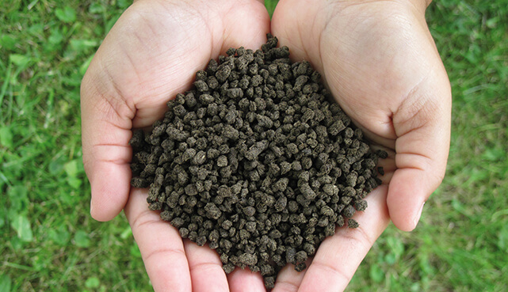

Organic fertilizers are fertilizers that are naturally produced.Fertilizers are materials that can be added to soil or plants, in order to provide nutrients and sustain growth. Typical organic fertilizers include all animal waste including meat processing waste, manure, slurry, and guano; plus plant based fertilizers such as compost; and biosolids.Inorganic "organic fertilizers" include minerals and ash. The organic-ness refers to the Principles of Organic Agriculture, which determines whether a fertilizer can be used for commercial organic agriculture, not whether the fertilizer consists of organic compounds.
Organic products are ideal for your landscape, because they feed the soil, creating a sustaining environment. Healthy soil leads to healthy plants.1 But when you garden organically, you do much more than nourish your plants.As in nature, an organic soil alive with microbes and fungi releases nutrients slowly to plants. By enriching the soil with organic supplements and encouraging the growth of naturally occurring beneficial organisms, you give your plants the tools they need to access nutrients in the soil and the strength to protect themselves from harmful pathogens and pests. Take the natural approach and amend with soil conditioners, such as earthworm castings, which add organic matter, including humid acid, and desirable microorganisms to your garden soil. This helps make soil borne nutrients, such as iron, more available to plants.
High-quality organic fertilizers are the products of natural decomposition and are easy for plants to digest. Made from natural sources, organic fertilizers provide garden plants with slow-release, consistent nourishment. Such a “health food" diet makes your plants strong and self-sustaining. Rather than depend on you for feeding them a steady supply of synthetic fertilizers, they find what they need in soil that has been fed with organic fertilizer.Organic fertilizers that feed the soil and sustain plants include animal waste and byproducts, such as bird and bat guano, blood meal, bone meal and feather meal, as well as fish and kelp fertilizers. Certified organic products, such as Alaska Fish Fertilizer 5-1-1 provide plants with nutrient-rich sources of organic matter that breaks down and slowly feeds plants, making them strong and vigorous.
Organic gardening takes a gentle approach to dealing with pests and diseases. This method includes taking steps to prevent pests and diseases before they occur, and using mild control methods and products. One of the least invasive prevention and control methods for pests and diseases is inspecting plants for problems, and then physically removing any pests or diseased areas found. This works well when a plant has a limited amount of problem areas. Organic gardening also uses exclusion methods to keep pests and diseases at bay. This includes covering plants with lightweight, spunbonded fabrics known as row cover.